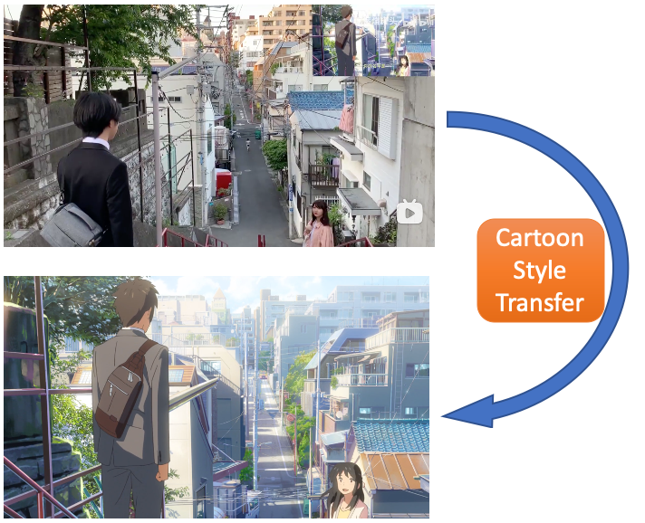
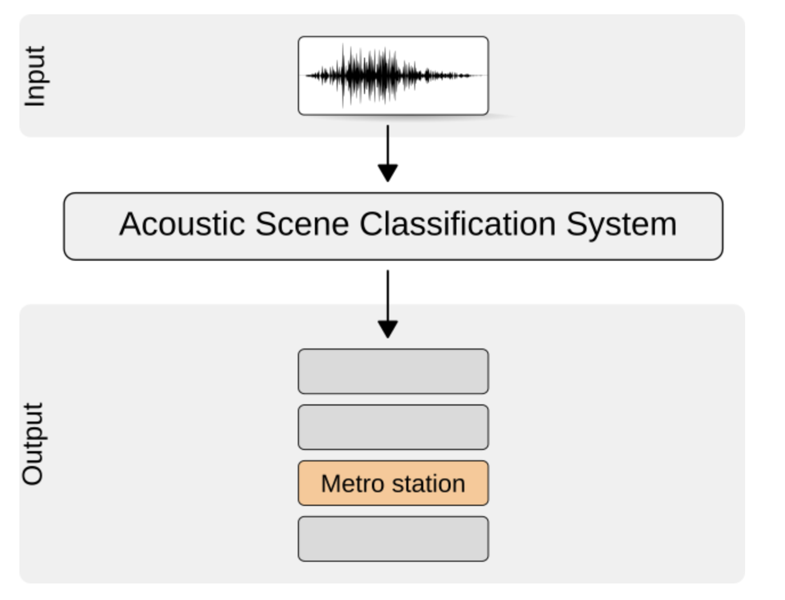

Jinbin BaiHello World! Welcome to my new personal website. I will update more details in the following days. Old version can be obtained by clicking it. I am admitted as a master student without an entrance examination. I received the B.S. degree from the Department of Computer Science and Technology, Nanjing University in June 2021 under the supervision of Ziteng Gao in Limin Wang's group. Before that, I was a Software Engineering Intern at ByteDance AI Lab during the fall of 2020 and an exchange student at the Department of Computer Science and Engineering, Shanghai Jiao Tong University during the spring of 2020. Before that, I graduated from the Affiliated High School of Shanxi University and Xinzhou Beifang Junior Middle School, respectively. Recently, I am doing some interesting research related to Computer Vision (GAN, style transfer and cartoonize) and Transformer. I'm interested in computer vision, machine learning and robotics. I am also open to explore other interesting AI topics. I am looking for a Ph.D. position.If you need any research intern, please feel free to contact me via email. |

|
News
- [03/2021] Awarded as an outstanding graduate of Nanjing University.
Publications
|  | |||
|  |
|
Experiences
- Aug. 2020: Tudor England, 1509-1603, Religion, Power and Nation, University of Oxford
- July 2020: History of Science, Technology and Medicine, Peking University
- Aug. 2019: NLP (Natural Language Processing) Summer Camp, Nanjing University
- July 2019: Entrepreneurial Leadership and Team Building, Nanyang Technology University
Honors & Awards
- 2021: Outstanding Graduate, Nanjing University
- 2020: Shanyuan Overseas Exchange Scholarship (Top 1%, 20 recipients in Nanjing Univeristy), Nanjing University
- 2019: National Excellent Undergraduate Innovation Project, Ministry of Education of P.R.China.
- 2019: National Scholarship for Encouragement, Ministry of Education of P.R.China.
- 2019: Yangzhou Scholarship, Nanjing University
- 2019: Peer Mentor, Nanjing University
- 2019: Outstanding Student, Nanjing University
- 2018: Heren Scholarship (Top 1%, 2 recipients in CS department), Nanjing University
Links
- Computer Vision: Representation and Recognition, Limin Wang (including my homework implementation)
- Online Courses
- Deep Learning Specialization, Andrew Ng
- Deep Neural Networks with PyTorch, IBM
- CS231n: Convolutional Neural Networks for Visual Recognition, Stanford University
- Generative Adversarial Network, Hung-yi Lee
- Nanjing University's Courses (Some course links are in Chinese)
- Principles and Techniques of Compilers, Chang Xu (including my homework and compiler implementation)
- Probability Theory and Statistics, Wei Gao
- Game Theory, Wei Gao
- Machine Learning, Han-Jia Ye and Zhi-Hua Zhou (including my homework implementation)
- Pattern Recognition and Computer Vision, Jianxin Wu
- Data Mining, Ming Li (including my homework implementation)
- Digital Image Processing, Lijun Zhang (including my homework implementation)
- AI Programming (Python), Li Zhang (including my homework implementation)
- Big Data Parallel Processing with MapReduce, Rong Gu (including my homework implementation)
Hobbies
-
I like reading the Sci-Fi, playing the piano, traveling and exploring the world. I also have a
board interest in PC games and I was addicted to Pal3, QQ Speed and Mabinogi.
Friends
- Zhimeng Guo, CS PhD@Pennsylvania State University
- Feifei Li, CS Master@Nanjing University
Last updated on March. 2021